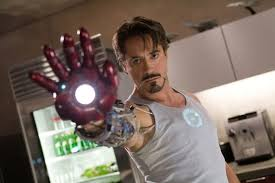
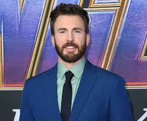
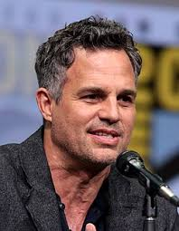
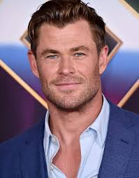
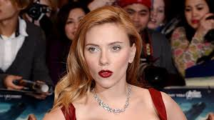
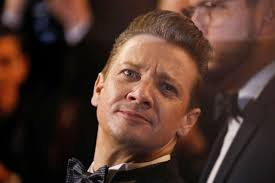
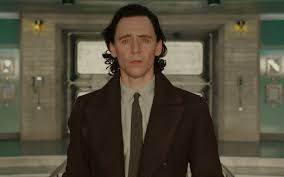
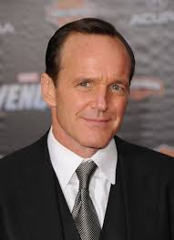

Robert Downey Jr. como Tony Stark / Iron Man
Es un millonario muy inteligente que usa una armadura con tecnología avanzada para luchar. En la película, es
uno de los líderes del equipo y aporta muchas ideas, aunque a veces choca con los demás por su actitud.

Chris Evans como Steve Rogers / Capitán América
Es un soldado de la Segunda Guerra Mundial que fue congelado y despertó en el presente. Siempre hace lo correcto
y trata de mantener al equipo unido, aunque a veces se frustra con Tony Stark.

Mark Ruffalo como Bruce Banner / Hulk
Es un científico tranquilo, pero si se enoja, se convierte en Hulk, un monstruo gigante con mucha fuerza. Al
principio no quiere meterse en problemas, pero después ayuda mucho en las peleas.

Chris Hemsworth como Thor
Es el dios del trueno y viene de otro mundo. Tiene un martillo mágico y es muy poderoso. En la película, trata
de detener a su hermano Loki, que es el villano principal.

Scarlett Johansson como Natasha Romanoff / Black Widow
Es una espía muy entrenada que pelea muy bien sin tener superpoderes. En la historia, ayuda a encontrar a los
demás héroes y también trata de calmar a Hulk cuando se pone violento.

Jeremy Renner como Clint Barton / Hawkeye
Es un experto en arco y flechas. Al comienzo de la película está controlado por el villano, pero después vuelve
al equipo y ayuda a pelear en la batalla final.

Tom Hiddleston como Loki
Es el hermano adoptivo de Thor y quiere dominar la Tierra. Usa un cetro con poderes y es muy astuto. Es el
villano principal de la película.

Clark Gregg como Phil Coulson
Es un agente muy leal de S.H.I.E.L.D. que cree mucho en los héroes. Su destino en la película afecta a todos los
personajes y los une como equipo.

Cobie Smulders como Maria Hill
Es la asistente de Nick Fury. Aunque aparece poco, ayuda a manejar la base y a controlar la situación cuando las
cosas se complican.